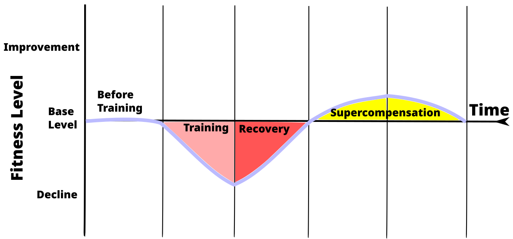

💪 Sức khỏe Nam giới
Nutrition — Intermittent Fasting & Male HormonesDeep dive⏱ 8 phút đọc
Nhịn Ăn Gián Đoạn (IF) & Nội Tiết Tố Nam: Lợi Ích Nhạy Insulin So Với Rủi Ro Tụt Testosterone
Nhịn ăn gián đoạn (Intermittent Fasting - IF) 16/8 đang là một trong những trào lưu giảm mỡ phổ biến nhất thế giới. Tuy nhiên, trong khi IF mang lại những lợi ích vượt trội về độ nhạy insulin, giảm viêm và tăng vọt hormone tăng trưởng (GH), các thử nghiệm lâm sàng chuyên sâu cảnh báo: Việc kéo dài thời gian nhịn ăn quá mức hoặc kết hợp với thâm hụt calo sâu có thể làm suy giảm nồng độ testosterone và hormone tuyến giáp ở nam giới.
Nguồn nghiên cứu & Thiết bị: Journal of Translational Medicine & The Journal of Clinical Endocrinology & Metabolism•Màn hình App: Metabolic Health & Endocrine Fasting Screen•Chỉ số: Insulin Sensitivity, Growth Hormone Pulsatility & LH/Testosterone
💡Điểm Cốt Lõi & Hành Động Thực Tế
Nhịn ăn gián đoạn 16/8 là công cụ tuyệt vời để giảm mỡ nội tạng và tăng độ nhạy insulin ở nam giới thừa cân (giúp gián tiếp tăng testosterone do giảm enzyme aromatase). Nhưng ở nam giới đã có thân hình săn chắc (body fat <12%) hoặc tập tạ nặng, nhịn ăn quá 16 tiếng sẽ kích hoạt tín hiệu thiếu năng lượng sẵn có, làm tụt Free T và tăng Cortisol.
Thử Nghiệm Đại Học Texas (Moro et al.): Sự Thật Về IF 16/8 Ở Nam Giới Tập Tạ
Trong một nghiên cứu ngẫu nhiên có đối chứng cực kỳ nghiêm ngặt công bố trên Journal of Translational Medicine (Moro et al., 2016), các nhà khoa học đã cho 34 nam giới tập kháng lực áp dụng hai chế độ ăn có cùng mức calo và protein:
- Nhóm 1 (Chế độ ăn truyền thống - ND): Ăn 3 bữa dàn trải trong ngày (08:00, 13:00, 20:00).
- Nhóm 2 (Nhịn ăn gián đoạn - TRF 16/8): Toàn bộ lượng calo được nạp trong khung cửa sổ 8 tiếng (13:00, 16:00, 20:00) và nhịn hoàn toàn 16 tiếng còn lại.
Sau 8 tuần, kết quả cho thấy:
- Cả hai nhóm đều duy trì khối cơ nạc và tăng sức mạnh như nhau.
- Nhóm nhịn ăn 16/8 giảm mỡ bụng tốt hơn đáng kể và chỉ số đề kháng insulin HOMA-IR hạ thấp rõ rệt.
- TUY NHIÊN: Ở nhóm nhịn ăn 16/8, các nhà nghiên cứu ghi nhận nồng độ Testosterone toàn phần giảm trung bình từ 15.5 ng/mL xuống 13.6 ng/mL, hormone tuyến giáp T3 tự do giảm nhẹ và hormone tăng trưởng IGF-1 giảm.
Điều này chứng minh: Nhịn ăn gián đoạn không phải là một "phép màu" hoàn hảo không tì vết, mà là một sự đánh đổi sinh học tùy thuộc vào mục tiêu và lượng mỡ cơ thể hiện tại của bạn.

📊 Chuyển Hóa Năng Lượng Giữa Đường & Mỡ: Nhịn ăn 16 tiếng buộc cơ thể chuyển sang trạng thái đốt axit béo (Metabolic Flexibility), nhưng nếu kéo dài quá mức sẽ kích hoạt trục stress sinh tồn. Nguồn sơ đồ: Wikimedia Commons ↗
Ai Nên Áp Dụng IF & Ai Nên Cẩn Trọng?
Đối Tượng Nam Giới
Tác Động Nội Tiết Của Nhịn Ăn Gián Đoạn
Khuyến Nghị Y Khoa Thực Tế
Nam giới Thừa cân / Béo bụng (Body Fat > 20%)
Cực kỳ có lợi: Giảm mỡ nội tạng làm giảm enzyme Aromatase (ngăn biến đổi T thành estrogen); độ nhạy insulin tăng giúp trục HPTA hoạt động tốt hơn.
Nên áp dụng 16/8: Nhịn từ 20:00 tối đến 12:00 trưa hôm sau; kết hợp đi bộ nhanh buổi sáng.
Nam giới Đã Săn Chắc / Lean (Body Fat 10%–14%)
Cần thận trọng: Cơ thể thiếu mỡ dự trữ sẽ coi 16 tiếng nhịn ăn là tín hiệu đói khát; Leptin tụt dốc làm ức chế hormone giải phóng GnRH tại vùng dưới đồi.
Chỉ nên áp dụng 12/12 hoặc 14/10: Đảm bảo nạp đủ carbohydrate và calo quanh các buổi tập tạ.
Vận động viên thi đấu thể lực / Vận động viên sức bền
Không khuyến khích: Gây hội chứng thiếu năng lượng sẵn có (RED-S), làm suy giảm glycogen gan và tăng nhịp tim nghỉ ngơi ban đêm.
Ăn đủ các bữa để phục hồi; ưu tiên nạp protein và carb cách đều 3–4 tiếng.
Vì Sao Hormone Tăng Trưởng (GH) Tăng Vọt Khi Nhịn Ăn?
Một trong những lập luận phổ biến của người ủng hộ IF là: "Nhịn ăn làm tăng hormone tăng trưởng (HGH) lên tới 500%". Sự thật sinh học là gì?
- Đúng là khi nồng độ đường huyết và insulin hạ thấp sau 14–16 tiếng nhịn ăn, tuyến yên sẽ tiết ra nhiều hormone tăng trưởng hơn (Ho et al., JCEM).
- Tuy nhiên, đây là cơ chế sinh tồn tự vệ của cơ thể: GH tăng vọt lúc nhịn ăn không nhằm mục đích "xây cơ khổng lồ", mà nhằm mục đích bảo vệ các mô cơ hiện có không bị phân giải thành axit amin để tân tạo đường và thúc đẩy quá trình giải phóng axit béo tự do để tạo năng lượng.
Giao Thức 4 Bước Tối Ưu Nhịn Ăn Gián Đoạn Cho Phái Mạnh
Khởi Đầu Nhẹ Nhàng Bằng Khung Giờ 14/10: Bắt đầu bằng 14 tiếng nhịn (ngừng ăn lúc 20:00 tối → ăn sáng lúc 10:00 sáng hôm sau). Đây là tỷ lệ an toàn giúp cải thiện tiêu hóa mà không làm xáo trộn nhịp tiết testosterone.
Không Bao Giờ Tập Tạ Cường Độ Cao Khi Đang Đói Khát: Tập kháng lực nặng trong trạng thái nhịn ăn kéo dài làm gia tăng đột biến hormone dị hóa Cortisol và tổn thương vi sợi cơ mà không có sẵn amino axit để sửa chữa. Nếu tập sáng, hãy bổ sung 10g EAAs hoặc 1 muỗng Whey Protein.
Giữ Nguyên Tổng Lượng Calo & Protein Trong Cửa Sổ Ăn: Đừng biến nhịn ăn gián đoạn thành một chế độ "bỏ đói cơ thể". Trong 8 tiếng ăn, bạn vẫn phải nạp đủ 1.8g protein/kg và lượng chất béo lành mạnh để nuôi tế bào Leydig.
Theo Dõi Điểm Phục Hồi (Recovery Score) & Giấc Ngủ: Nếu áp dụng IF khiến bạn trằn trọc khó ngủ vì đói hoặc điểm Recovery rơi vào vùng vàng/đỏ liên tục, cơ thể bạn đang báo động quá tải stress. Hãy nới rộng khung giờ ăn ngay lập tức.
Tài Liệu Tham Khảo & Nguồn Y Khoa
Moro, T., Tinsley, G., Bianco, A., et al. (2016).Effects of eight weeks of time-restricted feeding (16/8) on basal metabolism, maximal strength, body composition, inflammation, and cardiovascular risk factors in resistance-trained males. Journal of Translational Medicine, 14(1), 290. Đọc trên PubMed ↗
Catenacci, V. A., et al. (2016).A randomized pilot study comparing zero-calorie alternate-day fasting to daily caloric restriction in adults with obesity. Obesity, 24(9), 1874–1883. Đọc trên PubMed ↗
Ho, K. Y., et al. (1988).Fasting enhances growth hormone secretion and amplifies the complex rhythms of growth hormone secretion in man. The Journal of Clinical Investigation, 81(4), 968–975. Đọc trên JCI ↗
Heilbronn, L. K., et al. (2005).Alternate-day fasting in nonobese subjects: effects on body weight, body composition, and energy metabolism. The American Journal of Clinical Nutrition. Đọc trên PubMed ↗
📚
Nguồn Tham Khảo Y Khoa & Nghiên Cứu Gốc
Bài viết này được tổng hợp và kiểm chứng từ các nghiên cứu y sinh học, hướng dẫn lâm sàng và tài liệu khoa học thiết bị đeo của Journal of Translational Medicine & The Journal of Clinical Endocrinology & Metabolism.
💪 Men's Health
Nutrition — Intermittent Fasting & Male HormonesDeep dive⏱ 8 min read
Intermittent Fasting & Male Hormones: Insulin Sensitivity Gains vs. Androgen Drops
Time-Restricted Feeding (16/8 Intermittent Fasting) has become a dominant nutritional trend for male body recomposition. Yet while IF yields striking improvements in insulin sensitivity, visceral fat reduction, and pulsatile growth hormone (GH) output, controlled clinical trials reveal a dual reality: excessive fasting windows compounded by caloric deficits can induce suppressive reductions in circulating testosterone and thyroid hormones.
Clinical & Wearable Source: Journal of Translational Medicine & The Journal of Clinical Endocrinology & Metabolism•Mapped Screen: Metabolic Health & Endocrine Fasting Screen•Biometric: Insulin Sensitivity, Growth Hormone Pulsatility & LH/Testosterone
💡Key Actionable Takeaway
Intermittent fasting 16/8 is exceptionally potent for shedding visceral adiposity and reversing insulin resistance in overweight men (indirectly raising testosterone via aromatase downregulation). However, in already lean athletic males (body fat <12%) performing heavy resistance strain, prolonged fasting triggers low energy availability cues, dampening Free T and escalating cortisol.
The Texas Study (Moro et al.): The Reality of 16/8 IF in Resistance-Trained Men
In a rigorous randomized controlled trial published in the Journal of Translational Medicine (Moro et al., 2016), 34 resistance-trained men consumed isocaloric and isonitrogenous diets:
- Normal Diet (ND): 3 meals distributed across the day (08:00, 13:00, 20:00).
- Time-Restricted Feeding (TRF 16/8): All calories consumed in an 8-hour window (13:00, 16:00, 20:00) with a 16-hour fast.
After 8 weeks:
- Both cohorts preserved fat-free mass and gained maximal strength equally.
- The 16/8 cohort lost significantly more visceral fat and showed improved HOMA-IR insulin sensitivity.
- HOWEVER: In the 16/8 group, researchers observed that serum total testosterone decreased significantly from 15.5 to 13.6 ng/mL, free thyroid T3 declined, and IGF-1 contracted.
Intermittent fasting is not a cost-free panacea; it represents a physiological trade-off dependent on your baseline body composition and athletic demands.
📊 Fuel Switching Under Fasting: Fasting forces cellular adaptation toward free fatty acid oxidation, but prolonged fasting in lean individuals triggers energy-conservation stress responses. Diagram source: Wikimedia Commons ↗
Who Benefits from IF and Who Should Exercise Caution?
Implement 16/8: Fast 20:00 to 12:00; combine with morning fasted walks.
Lean / Athletic Men (Body Fat 10%–14%)
Proceed with Caution: Lean bodies interpret 16-hour deficits as starvation; leptin crashes suppress hypothalamic GnRH pulses.
Adopt 12/12 or 14/10: Ensure adequate carbohydrates and calories surrounding heavy lifting sessions.
Competitive Endurance / High-Strain Athletes
Not Recommended: Risks Low Energy Availability (RED-S), depletes liver glycogen, and elevates overnight resting heart rates.
Distribute balanced meals every 3–4 hours to optimize recovery and hormone synthesis.
Why Does Growth Hormone (GH) Surge During Fasting?
Proponents of IF celebrate that fasting increases growth hormone by up to 500% (Ho et al., JCEM). What is the true biology?
- In response to hypoglycemia and hypoinsulinemia after 14–16 hours of fasting, pituitary GH release surges.
- However, this is an evolutionary survival mechanism: GH surges during fasting not to build huge new muscle, but to prevent existing skeletal muscle catabolism and stimulate lipolysis for survival fuel.
4-Step Practical Protocol for Fasting Without Endocrine Compromise
Start with a 14/10 Window: Fast 14 hours (finish dinner at 20:00 → breakfast at 10:00). Improves digestion and insulin sensitivity without stressing the gonadal axis.
Never Lift Heavy in a Deeply Depleted State: Performing maximal resistance workouts while fasted spikes cortisol and increases muscle breakdown without amino acids for repair. Ingest 10g EAAs or 1 scoop whey pre-workout if training early.
Hit Full Daily Calories & Protein: Never conflate fasting with starvation. In your 8-hour feeding window, consume 1.8g protein/kg and sufficient healthy fats for Leydig cells.
Monitor Recovery Score and Sleep Quality: If fasting triggers insomnia or causes your Recovery Score to crater into yellow/red, your body is signaling excessive stress. Expand your eating window immediately.
Clinical References & Scientific Sources
Moro, T., Tinsley, G., et al. (2016).Effects of eight weeks of time-restricted feeding (16/8) in resistance-trained males. J Transl Med, 14(1), 290. View on PubMed ↗
Catenacci, V. A., et al. (2016).A randomized pilot study of alternate-day fasting in adults with obesity. Obesity, 24(9), 1874–1883. View on PubMed ↗
Ho, K. Y., et al. (1988).Fasting enhances growth hormone secretion and amplifies rhythms in man. J Clin Invest, 81(4), 968–975. View on JCI ↗
Heilbronn, L. K., et al. (2005).Alternate-day fasting in nonobese subjects. Am J Clin Nutr. View on PubMed ↗
📚
Clinical Reference & Scientific Backing
This article is synthesized from peer-reviewed medical literature, clinical guidelines, and wearable biometric validation studies from Journal of Translational Medicine & The Journal of Clinical Endocrinology & Metabolism.